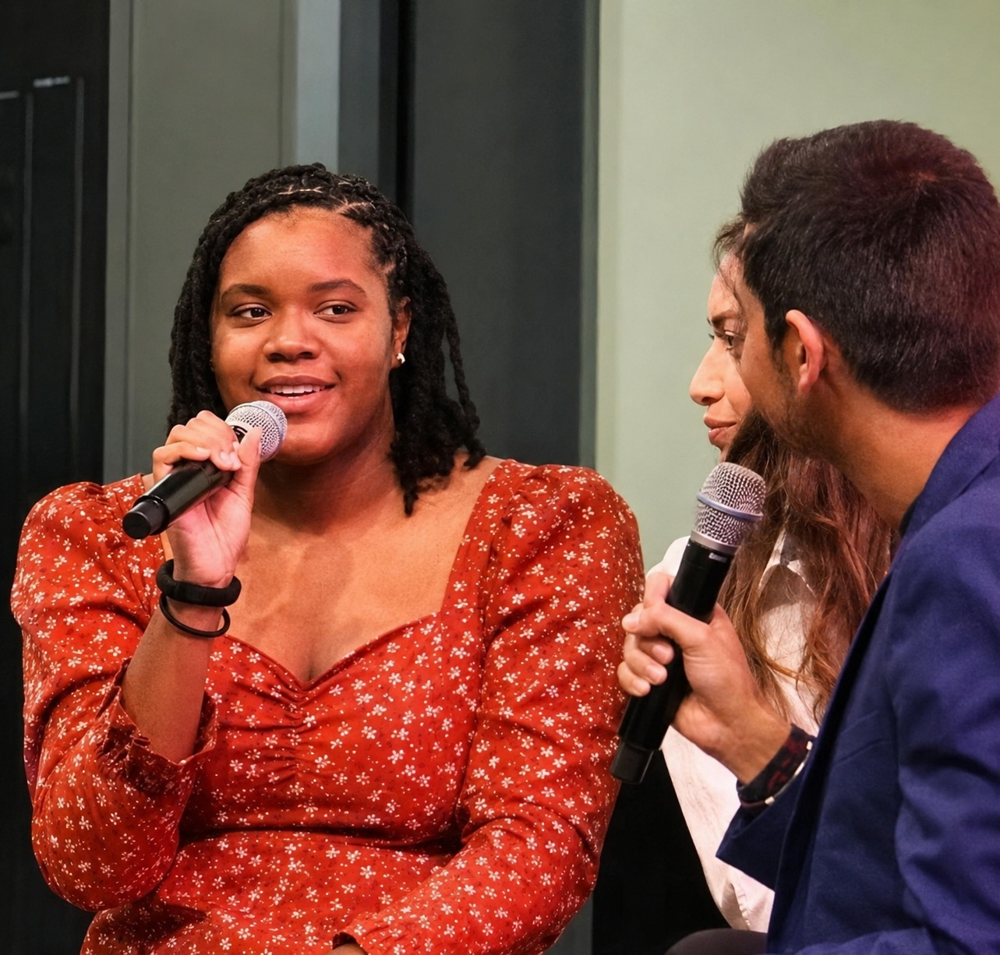
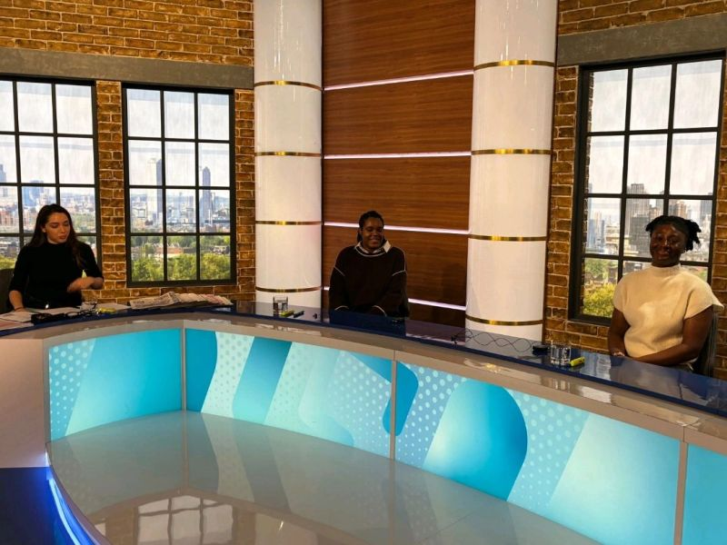
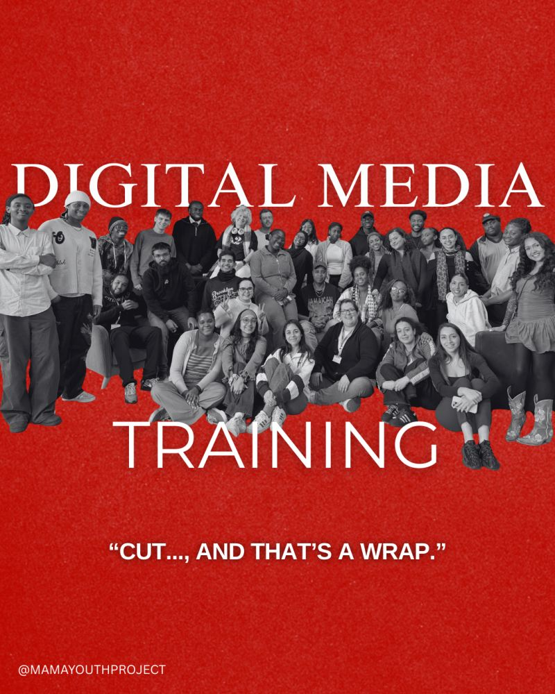

Seeking entry-level opportunities in Production Assistant/Secretary roles. Passionate about supporting creative teams and productions from start to finish.

I am seeking entry-level opportunities in Production Assistant and Production Secretary roles. Experienced as a Trainee Production Coordinator at MAMA Youth Project, I have managed student short films and documentaries, handling aspects from directing to editing.
My background includes skilled runner experience at busy post-production companies and supporting high-profile events and talent, including the National TV Awards and work with Premier PR. I thrive in fast-paced environments, ensuring seamless operations behind the scenes.
Years Experience
Productions
Major Events
A glimpse into the productions, events, and environments I've supported.
BAFTA albert
The Mark Milsome Foundation | ProTrainings Europe Ltd
"Ayanna was an absolute star during the daytime live broadcasts. Her ability to handle last-minute guest changes and manage the call sheets with such precision made the gallery run incredibly smoothly. Highly recommended for any production team."

"During her time at MAMA Youth Project, Ayanna showed incredible proactive energy. Whether she was directing her own short film or acting as a runner to support the wider team, her collaborative spirit and attention to detail were second to none."
